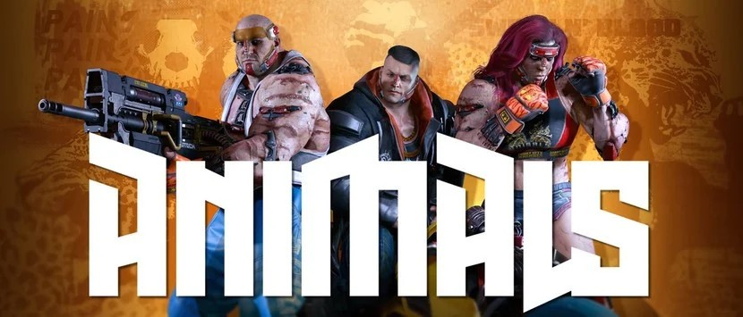
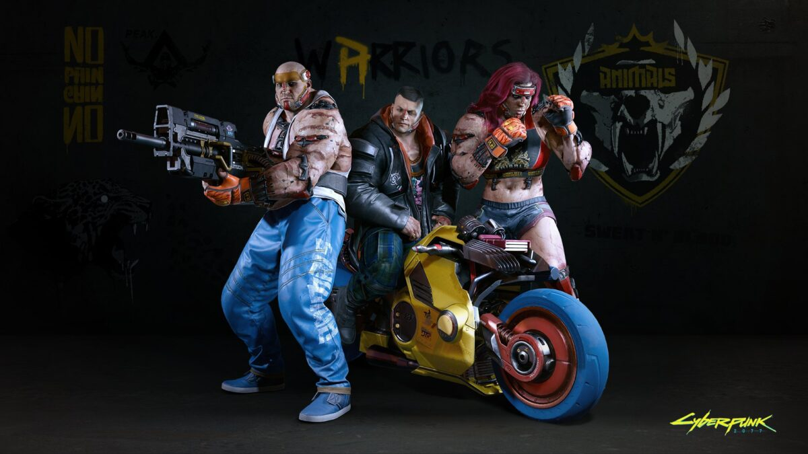

|  | |||||||||
| Anasayfa | Hayvanlar | Kaplan Pençeleri | Valentinolar | Voodoo Oğlanları | Maelstrom | Mox | 6. Cadde | Wraithler | Aldecaldolar |
| Hayvanlar (asıl hali ile Animals), Batı Pacifica'da bulunan ve her şeyden önce fiziksel güce önem veren saldırgan bir sokak çetesidir. Geleneksel siber yazılım'lardan kaçınıp yakın dövüşü geliştiren siber yazılımlar ve testosteron, hayvan takviyeleri ve kullanıcının gücünü ve hızını arttıran steroid benzeri "Meyve Suyu" olarak bilinen bir ilaç kullanırlar. Hayvanlar kalıcı bölgeleri olmayan saldırgan bir sokak çetesidir. Üyeleri, özel yapılmış vücut geliştirmeleri ve modifikasyonları için en yaygın elektronik implantlardan uzak durmalarıyla bilinmektedir. Daha iri ve güçlü olmak için, at geliştirme hormonları da dahil, ultra testosteron ve hayvan takviyeleri kullanırlar. Deneyimli dövüşçüler ve çeşitli dövüş sanatlarında eğitilmiş Hayvanlar, kafes dövüşlerine, düellolara ve diğer kaba fiziksel güç gösterilerine meraklıdır. Vahşilik ve sertlikleri, onları aranan fedai ve korumalar yapar. Tipik spor dövmeleri ve çete başlıklarının yanı sıra benekli veya çizgili derileri ve deri altı implantları gibi tamamen kozmetik özelliklerden aşırı plastik cerrahi, hayvan çenesi, implante kaslara kadar yapay hayvansal özelliklere sahiplerdir. Çetenin kullandığı siber yazılım; acı editörleri, savaş ilacı enjektörleri, uzatılmış uzuvlar içerir. Hayvanlar, vahşi hayvanlardan ve insan doğasının ilkel tarafından büyülenmişlerdir. Bu yönü insan ve hayvan arasındaki sınır olarak görüyorlar ve her biri kişisel arayış içinde olup kendilerini yeni baskın insan alt türü olarak görüyorlar. Bunu elde etmek için kendilerini sürekli olarak acımasız ve şiddetli beceri testlerine tabi tutuyorlar. Diğer çetelelerin, şirket güçlerinin üyesi veya polis olsalar bile sıklıkla siber implantlı ve tehlikeli rakiplerle karşı karşıya gelirler. Dövüş sporlarında kendilerini felsefi nedenlerden değil, mücadelelerde etkilerini arttırmak için geliştirirler. Çetenin iç ilişkileri de açık olarak aynı ölçüde hayvansaldır. Daimi olmayan bölgelerinde Hayvanlar, küçük parçalara bölünmüş bir şekilde en büyük ve en güçlü üye, alfa erkek veya kadın tarafından yönetilir. Anlaşmazlıklar genellikle kavga yoluyla çözülür ve kavga bir taraf tamamen pes edene kadar devam eder. Hayvanlar genellikle yerleşim bölgelerine ve diğer çetelerin yerleşim bölgelerine saldırılarıyla bilinirler. İllegal ve yeraltı dövüşleri düzenler ve çoğunlukla özel üretilmiş anabolik steroid gibi ilaçlar imal edip satarlar. Çetenin birkaç grubu ilaç depolarına, kimyasal nakliyeye, ilaç şirketlerine, ilaç satıcılarına baskın yapmakta uzmanlaşmıştır. Bazıları kendilerini genelevlerde ve striptiz kulüplerinde fedai olarak veya haraç ve saldırıda uzmanlaşmış haraççı olarak işe alıyor.  |